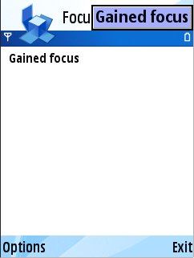
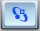
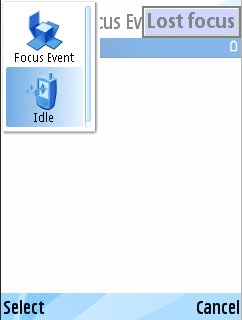

S60 5th Edition SDK
Example Applications Guide |
Focus Event Example
1. About this Example
2. User Interface
3. Design and Implementation
Often an application needs to know when it has lost focus. This would, for example, allow a game to automatically enter pause mode when another application is launched. Situations where the current application might lose focus include:
- Starting another application.
- A system dialog appears, such as the "Recharging" dialog.
- The user switches back to the desktop.
- An incoming phone call is received.
This example demonstrates how an application can be informed when these events occur, and also when the application regains focus again.
This example exists as a complete application, and has the standard Symbian OS application architecture, employing the Application, Document, UI, and View classes. The reader should be aware of this architecture before continuing.
When invoked, the application displays the following screen. The message 'Gained focus' will appear on the application window. On the debug version of the PC emulator only, the message 'Gained focus' will also be displayed for a few seconds.

- Select Exit to exit from the application.
To show the effect of losing focus, keep the Applications button pressed for approximately three seconds:

The set of currently running applications will be displayed, and the message 'Lost focus' will appear on the application window. On the PC emulator only, the message 'Lost focus' will appear for a short time.

The implementation for this example is very simple, and only requires one function in the application user interface:
This function is declared as virtual in the base class, as it is called by the framework every time that focus is lost or gained. In this implementation, this function causes a message to be displayed informing the user that they have lost or gained focus.
|
© Nokia 2009 |

|